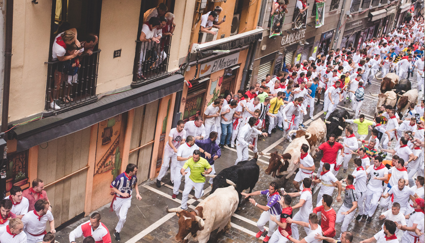

Qué es la Procesión de San Fermín
Es uno de los actos más importantes de las fiestas, donde tradición, música y simbolismo se combinan en un recorrido solemne.
Por qué verla bien no es fácil
El recorrido es largo y la visibilidad desde la calle depende mucho del punto y la afluencia.
Una forma diferente de vivirla
Desde un balcón, el momento se vive con más calma, entendiendo el ambiente y la emoción colectiva.
Opciones para ver el encierro
Existen diferentes formas de vivir el encierro, cada una con sus particularidades:
- Desde la calle: experiencia intensa, pero con visibilidad muy limitada.
- Desde el vallado: algo más organizado, aunque sigue siendo masivo.
- Por televisión: visión completa, pero sin la emoción del directo.
- Desde un balcón: perspectiva elevada, comprensión del recorrido y mayor comodidad.
Cada opción tiene su lugar, pero la diferencia está en cómo quieres vivir el momento.
Tipos de experiencias
Cada experiencia parte de una misma base: ver el encierro con seguridad y perspectiva. A partir de ahí, cambia el cómo.



¿Cuánto cuesta vivir el encierro desde un balcón?
Las opciones varían según la ubicación, el acceso y el tipo de experiencia. De forma orientativa, suelen situarse entre 120€ y 450€ por persona.
A partir de ahí, cada propuesta se adapta en función de lo que buscas.
Una forma diferente de vivir la Procesión
Desde un balcón, la Procesión se entiende mejor. No solo se ve: se sigue, se interpreta y se vive con otra calma.
Esta propuesta no busca cambiar la fiesta, sino ofrecer una forma de acceder a ella con más sentido, comodidad y contexto.
Por qué hacemos esto
Esto no nace como un servicio. Nace de haber vivido San Fermín desde dentro durante generaciones.
Nuestro papel es simplemente abrir esa puerta a quienes quieren vivirlo de una forma más auténtica.
Seguir descubriendo San Fermín
El encierro es solo uno de los momentos que marcan la fiesta. A lo largo del día, Pamplona sigue cambiando de ritmo y de tono.
Puedes empezar por el Chupinazo, donde todo comienza, o acercarte a la Procesión de San Fermín, uno de los momentos más simbólicos.
También hay espacio para lo más cercano, como los Gigantes, o el cierre emocional del Pobre de mí.
Y si buscas algo más personal, puedes explorar nuestras experiencias a medida o profundizar en las guías de San Fermín.
Porque San Fermín no es un solo momento. Es todo lo que ocurre entre uno y otro.